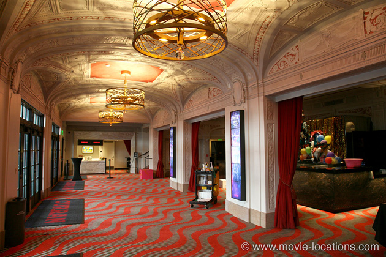
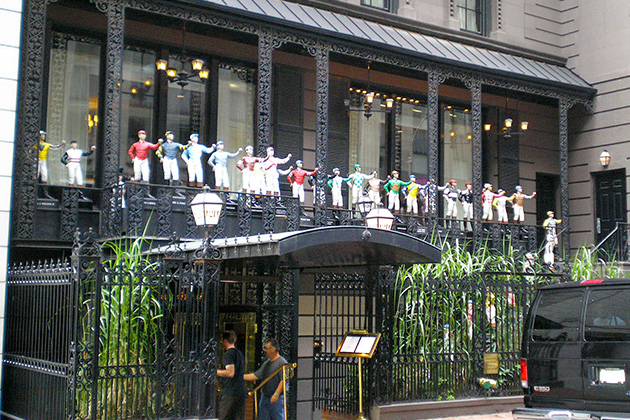

All About Eve
Main Content

Although made largely in the studio in Los Angeles, clever use of Second Unit filming adds a little East Coast authenticity to Joseph L Mankiewicz’s story of ruthless ambition, set in Manhattan theatreland, which got a record fourteen Oscar nominations, and bagged six of them, including biggies Best Picture, Direction and Screenplay.
Manipulative Eve Harrington (Anne Baxter), first seen as a sweet, unassuming little mite, hangs around the stage door of New York’s John Golden Theatre, 252 West 45th Street at 8th Avenue, for a glimpse of her idol, Margo Channing (Bette Davis, in best scene-stealing form).
Though the alley beside the Golden, where helpful Karen (Celeste Holm) offers to take Eve backstage, is a studio set, the establishing longshot is real. Doubles stood in for the two stars, who remained back at the Fox studios in Hollywood, a standard technique of the period, used throughout the film.
The cast did make it a little further up the West Coast from Hollywood, though, as far as San Francisco to film theatre interiors, where a pre-stardom Marilyn Monroe appears as Miss Caswell, ‘a graduate of the Copacabana school of acting’ – the protegé of caustic Addison DeWitt (George Sanders).
The Golden’s interior seen in the film is actually that of the Curran Theatre, 445 Geary Street, downtown San Francisco. Built in 1922, the theatre is still a popular venue for the latest big musicals.

Celeste Holm gets a stand-in as Karen for her entrance into New York’s famous 21 Club, 21 West 52nd Street between Fifth and Sixth Avenues, where she bumps into Eve.
The real 21 Club, a pretty exclusive drinking club which started up during Prohibition as a speakeasy, was given a new lease of life in 1987 when, after years of decline, it was renovated. It features frequently as a symbol of worldly success in such films as Oliver Stone’s Wall Street, showbiz satire The Sweet Smell of Success and Woody Allen’s Manhattan Murder Mystery – where you can see the club’s jockey-covered frontage.
Footsteps on the Ceiling, the play in which Eve finally gets the coveted plum role, opens at the Shubert Theatre, 247 College Street, New Haven, Connecticut, a traditional out-of-town try-out venue for Broadway-bound shows (A Streetcar Named Desire premiered here in 1947, launching Marlon Brando to stardom), and the hometown of Yale University. Once again, doubles are used for the long shots, while Anne Baxter and George Sanders stroll past rear projection of the Shubert and the nearby Taft Hotel (now the Taft Apartments).
The swanky apartment to which Eve finally retires, clutching her Sarah Siddons award, was filmed on New York’s Fifth Avenue, with the inevitable stand-in.
Visit Info
Visit The Film Locations
New York
Flights: John F Kennedy International Airport, New York, NY 11430 (tel: 718.244.4444)
Visit: New York
Travel around: MTA
Visit: the John Golden Theatre, 252 West 45th Street, New York, NY 10036 (tel: 212.239.6200)
Vist: the 21 Club, 21 West 52nd Street, New York, NY 10019 (tel: 212.582.7200)
California | Los Angeles
Visit: Los Angeles
Flights: Los Angeles International Airport (LAX), 1 World Way, Los Angeles, CA 90045 (tel: 424.646.5252)
Travel around: Los Angeles Metro
California | San Francisco
Visit: San Francisco
Flights: San Francisco International Airport, San Francisco, CA 94128 (tel: 650.821.8211)
Travel around: BART (Bay Area Rapid Transit)
Visit: the Curran Theatre, 445 Geary Street, San Francisco, CA 94102 (tel: 888.746.1799)
Connecticut
Visit: Connecticut
Visit: New Haven
Visit: the Shubert Theatre, 247 College Street, New Haven, CT 06510 (tel: 203.562.5666)